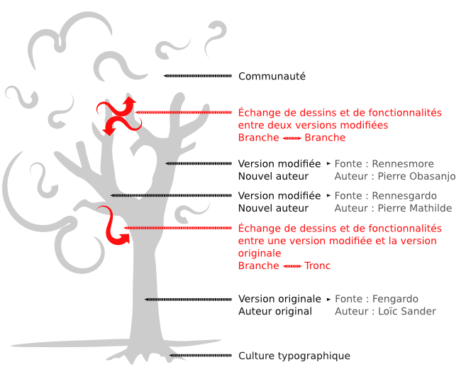
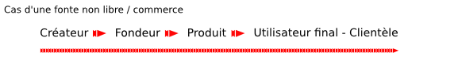
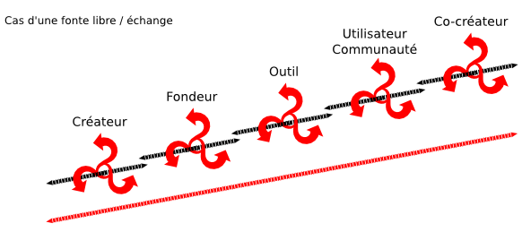

Écosystème des fontes libres
Pour mieux visualiser et appréhender les différentes interactions des acteurs et des projets liées à une fonte libre, la notion d'écologie est très parlante. Elle nous permet d'expliquer pratiquement le contraste entre une approche fermée et une approche libre.
Métaphore de l'arbre
On peut imaginer un projet de fonte libre comme un arbre composé d'un tronc et d'une série de branches et ainsi examiiner leur croissance et leur interdépendance commune. Le tronc représente la version originale du projet par le premier auteur tandis que les branches représentent des versions dérivées de ce tronc. Le schéma ci-dessous nous permet de mieux visualiser le rapport entre le tronc et les branches pour représenter la vie d'un projet de fonte libre et les différents protagonistes et les différents noms qu'ils ont choisis.

Principes généraux
Même si cela peut impacter la préparation et la production de fontes (voir le chapitre « Bonnes pratiques des fondeurs »), la liberté en matière de fontes inclut aussi et peut-être surtout une dimension morale, ce qui implique le respect d'une certaine éthique (voir le chapitre « Recommandations de nommage » ) mais aussi une voie ouverte vers d'autres méthodes de travail et d'organisation.
Les fontes libres marquent l'entrée de la typographie dans une phase hypernumérique, dans le sens où la création et le comportement des acteurs n'est plus seulement influencé par le recours à l'outil numérique, avec ce que cela suppose de vitesse, de virtualité plastique, de performance technique mais aussi et peut-être surtout par le contexte du réseau.
La libre distribution des fontes et le partage des modifications font potentiellement de chaque utilisateur un relais et non simplement un utilisateur final en bout de chaîne typographique.
L'organisation du travail peut s'en trouver profondément modifiée. Dans des projets graphiques ou éditoriaux, dans lesquelles les fontes représentent une ressource-clé, le fait de pouvoir partager librement cette ressource permet de redistribuer la charge de travail, de partager plus simplement les matériaux de création et d'édition et d'aboutir à un travail plus coopératif. Inversement, des fontes non libres et stipulant une tarification au nombre de postes, dissuadent par ce mécanisme de « péage » un travail collaboratif.

Au-delà de la fonderie libre, la gestion d'une communauté
À la différence d'un fondeur privateur qui gère ses utilisateurs comme des clients, le fondeur libre se retrouve également propulsé au rang de gestionnaire de communauté. Dans cette communauté, se trouvent à la fois des graphistes, des développeurs, des entreprises, des entités à but non lucratif, ou encore de simples particuliers. Là encore, cela diffère du public des fonderies privatrices qui n'est composé que de professionnels du graphisme ou de la typographie, car les licences non-libres en font bien souvent des utilisateurs finaux, la chaîne typographique s'arrête donc à eux.
Cette fonction ne se réduit pas à l'animation d'une page ou d'un espace dédié sur des réseaux sociaux (ce qui peut se retrouver également dans les fonderies commerciales à des fins strictes promotionnelles) mais s'étend également à la gestion des ressources typographiques dérivées de la fonte originelle.
Ceci étant, il peut également s'appuyer sur des outils de partage dédiés (voir le chapitre « Organiser ses sources »).